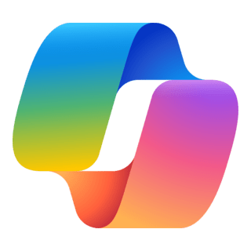
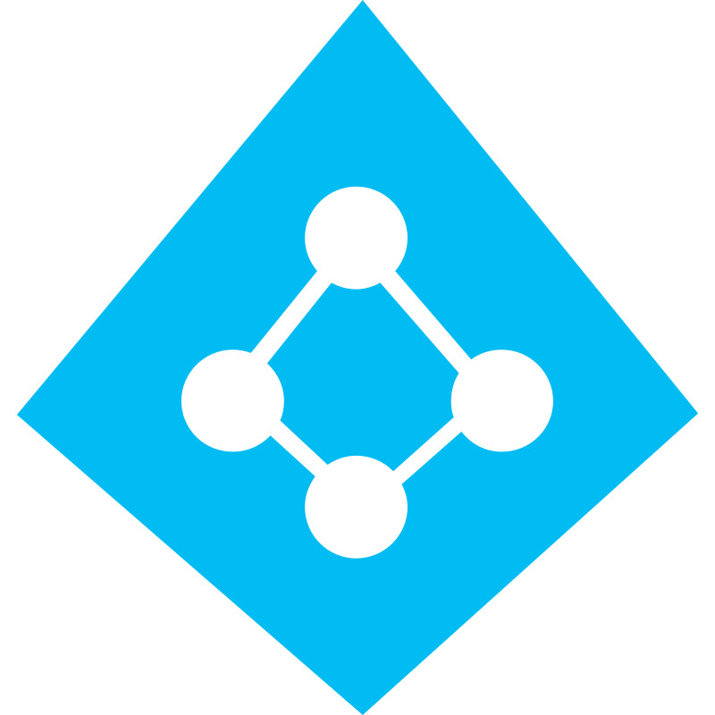
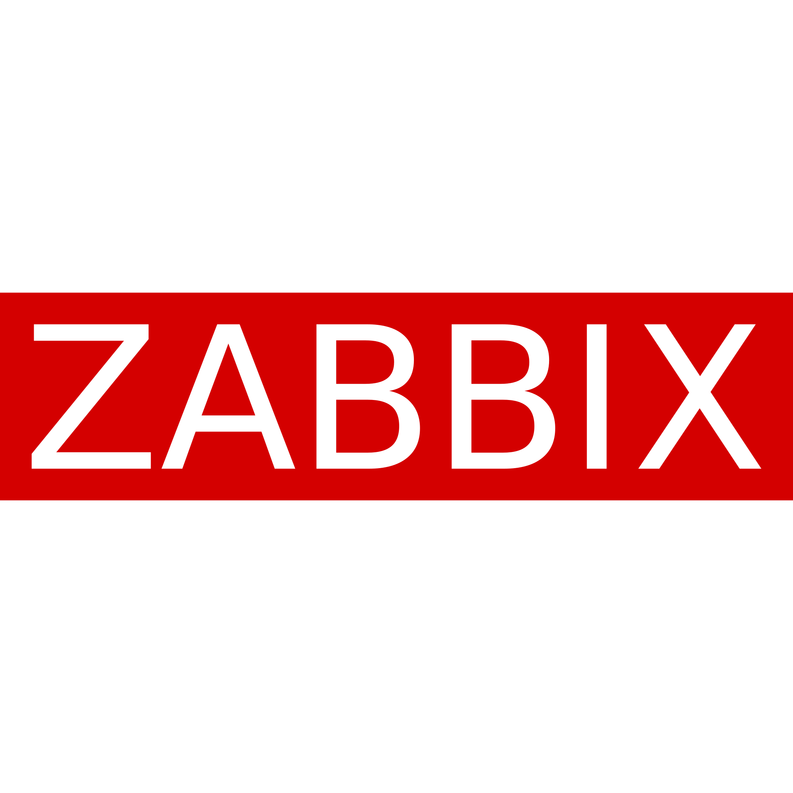
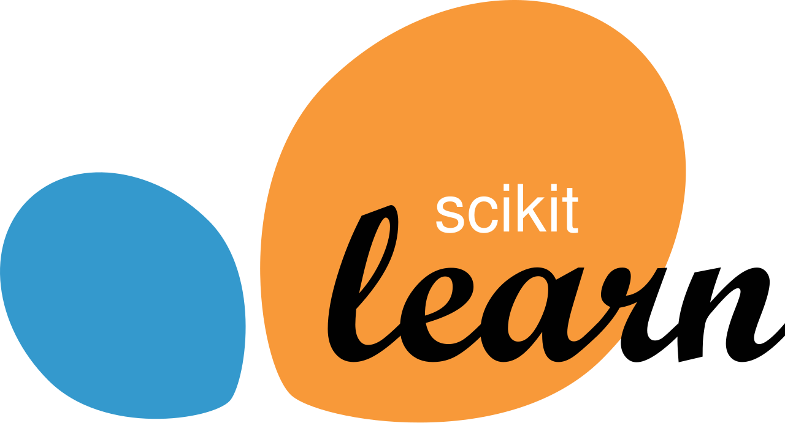
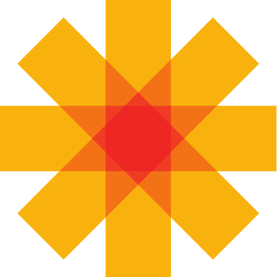
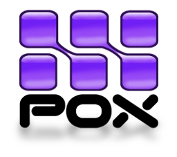

Technical Skills
A selection of tools, platforms, and technologies used across systems administration, cloud infrastructure, cybersecurity, networking, and research-driven development.
Systems and Cloud
Platforms and tools used for enterprise infrastructure, virtualization, automation, cloud operations, and backup environments.
Linux
Windows
VMware
Azure
AWS
Docker
Kubernetes
Terraform
Ansible
Bash
PowerShell

Microsoft 365
Microsoft Intune
GitHub
Jenkins
Veeam
Synology
Security and Networking
Monitoring, directory services, traffic analysis, infrastructure security, and networking platforms.

Active Directory
Wireshark

Zabbix
Nagios
Cisco
Fortinet
Aruba
Research and ML
Research-oriented tools and platforms used for machine learning, SDN experimentation, and intelligent security analytics.
Python

Scikit-learn
TensorFlow
PyTorch

OpenDaylight
Ryu

POX